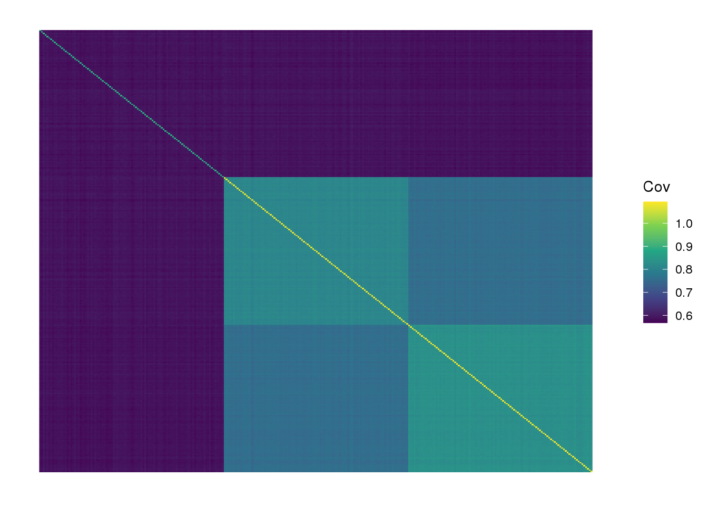
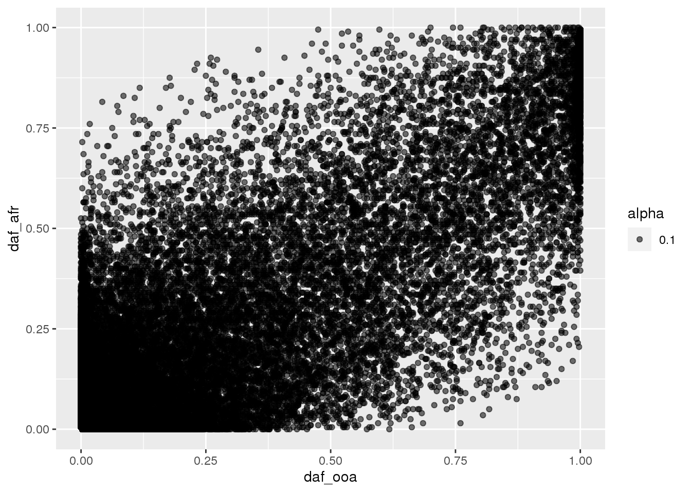
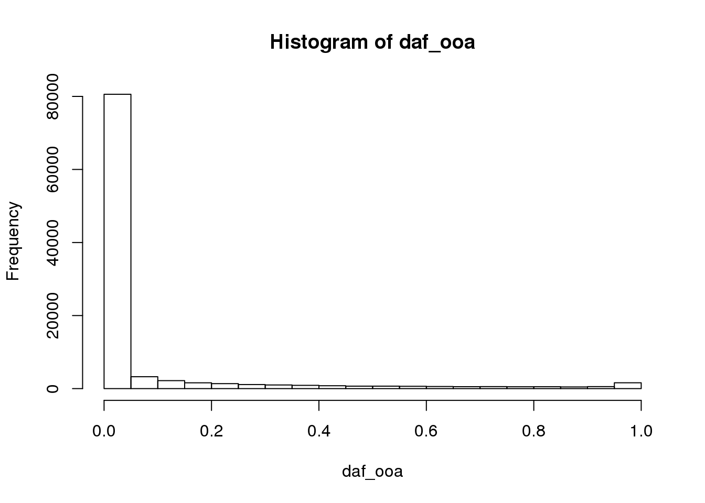
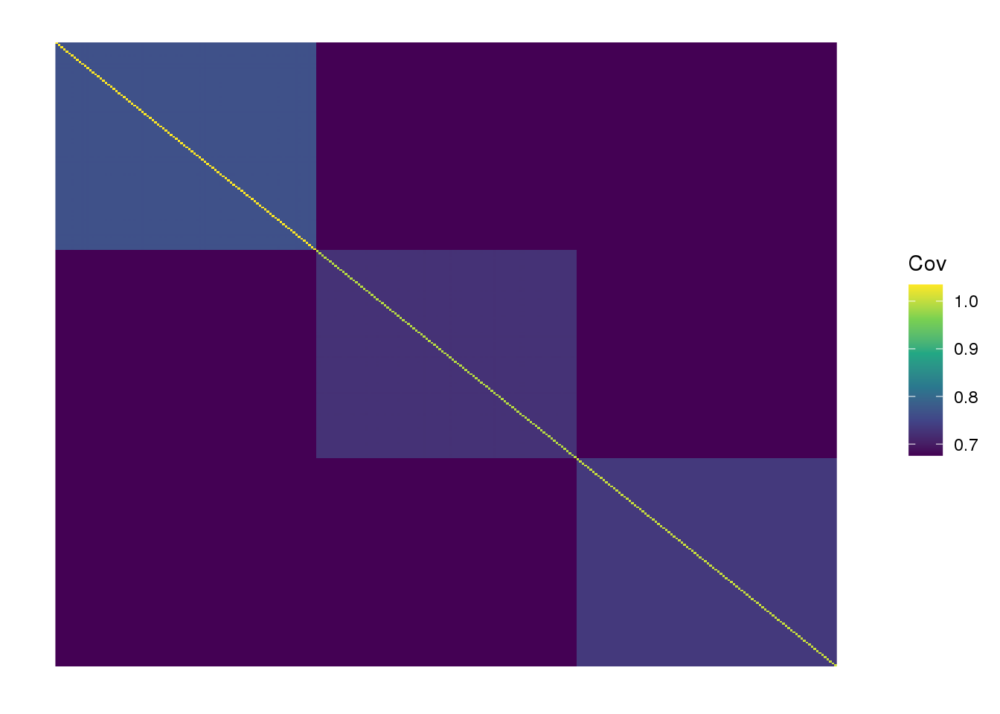
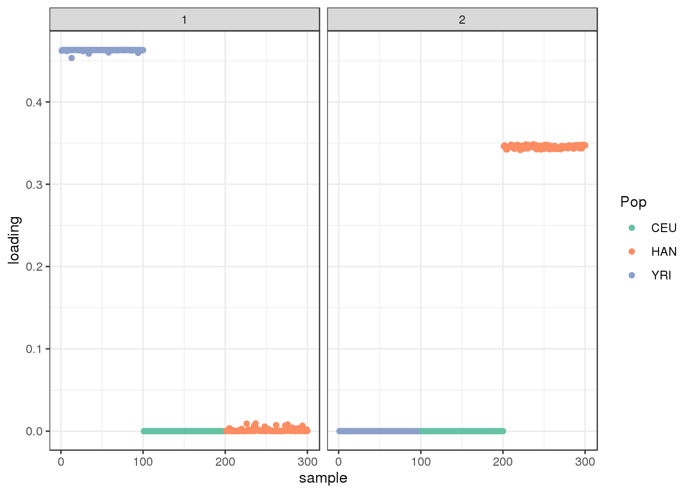
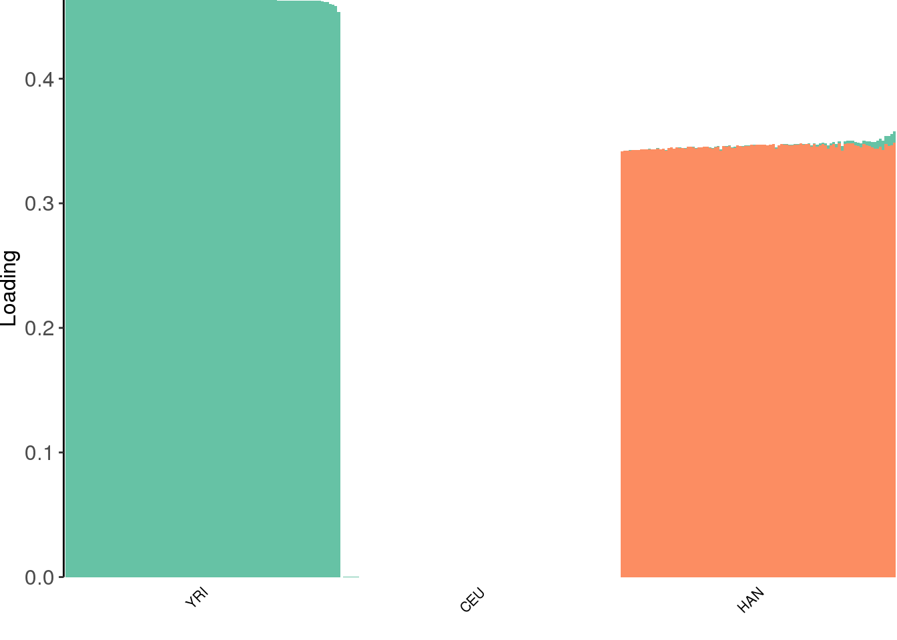
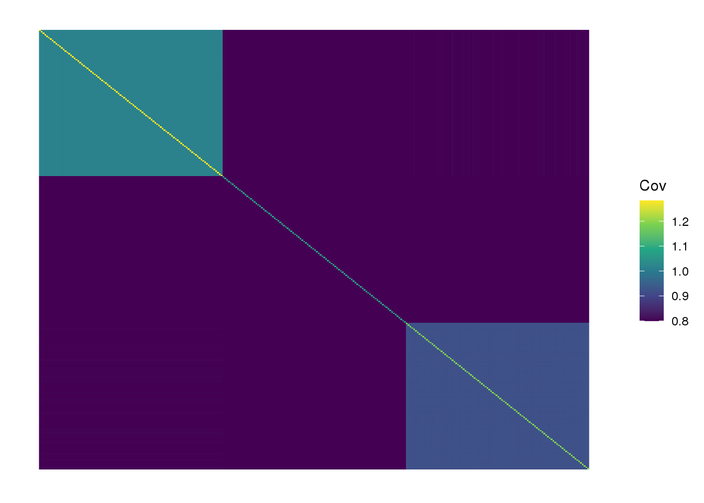

OutOfAfrica_3G09 [fixed shared factor]
Joseph Marcus
2020-05-18
Last updated: 2020-05-20
Checks: 7 0
Knit directory: drift-workflow/analysis/
This reproducible R Markdown analysis was created with workflowr (version 1.6.1). The Checks tab describes the reproducibility checks that were applied when the results were created. The Past versions tab lists the development history.
Great! Since the R Markdown file has been committed to the Git repository, you know the exact version of the code that produced these results.
Great job! The global environment was empty. Objects defined in the global environment can affect the analysis in your R Markdown file in unknown ways. For reproduciblity it’s best to always run the code in an empty environment.
The command set.seed(20190211) was run prior to running the code in the R Markdown file. Setting a seed ensures that any results that rely on randomness, e.g. subsampling or permutations, are reproducible.
Great job! Recording the operating system, R version, and package versions is critical for reproducibility.
Nice! There were no cached chunks for this analysis, so you can be confident that you successfully produced the results during this run.
Great job! Using relative paths to the files within your workflowr project makes it easier to run your code on other machines.
Great! You are using Git for version control. Tracking code development and connecting the code version to the results is critical for reproducibility.
The results in this page were generated with repository version e42d06d. See the Past versions tab to see a history of the changes made to the R Markdown and HTML files.
Note that you need to be careful to ensure that all relevant files for the analysis have been committed to Git prior to generating the results (you can use wflow_publish or wflow_git_commit). workflowr only checks the R Markdown file, but you know if there are other scripts or data files that it depends on. Below is the status of the Git repository when the results were generated:
Ignored files:
Ignored: .snakemake/
Ignored: data/datasets/
Ignored: data/raw/
Ignored: data/simulations/
Ignored: notebooks/.ipynb_checkpoints/
Ignored: output/
Ignored: sandbox/.ipynb_checkpoints/
Untracked files:
Untracked: analysis/AmericanAdmixture_4B11_fix.Rmd
Note that any generated files, e.g. HTML, png, CSS, etc., are not included in this status report because it is ok for generated content to have uncommitted changes.
These are the previous versions of the repository in which changes were made to the R Markdown (analysis/OutOfAfrica_3G09_fix.Rmd) and HTML (docs/OutOfAfrica_3G09_fix.html) files. If you’ve configured a remote Git repository (see ?wflow_git_remote), click on the hyperlinks in the table below to view the files as they were in that past version.
| File | Version | Author | Date | Message |
|---|---|---|---|---|
| Rmd | e42d06d | Joseph Marcus | 2020-05-20 | wflow_publish(“OutOfAfrica_3G09_fix.Rmd”) |
| html | 5f94116 | Joseph Marcus | 2020-05-18 | Build site. |
| Rmd | 59c3de9 | Joseph Marcus | 2020-05-18 | wflow_publish(“OutOfAfrica_3G09_fix.Rmd”) |
| html | 484ce56 | Joseph Marcus | 2020-05-18 | Build site. |
| Rmd | 36c05dd | Joseph Marcus | 2020-05-18 | wflow_publish(“analysis/OutOfAfrica_3G09_fix.Rmd”) |
| Rmd | 865cef4 | Joseph Marcus | 2020-05-18 | added fixed shared factor |
| html | 865cef4 | Joseph Marcus | 2020-05-18 | added fixed shared factor |
Here I visualize population structure with simulated data from the OutOfAfrica_3G09 scenario. See Figure 2. from Gutenkunst et al. 2009.
Below, I show a number of EBMF solutions and in each of them I don’t display the first shared factor which is prefixed to the one-vector and scale the loadings by the prior variance. I only describe the loadings that remain after the shared factor.
Imports
Import the required libraries and scripts:
suppressMessages({
library(lfa)
library(flashier)
library(drift.alpha)
library(ggplot2)
library(RColorBrewer)
library(reshape2)
library(tidyverse)
library(alstructure)
source("../code/structure_plot.R")
})Data
data_path <- "../output/simulations/OutOfAfrica_3G09/rep1.txt"
G <- t(as.matrix(read.table(data_path, sep=" ")))
colnames(G) <- NULL
rownames(G) <- NULL
n <- nrow(G)
daf <- colSums(G) / (2 * n)
colors <- brewer.pal(8, "Set2")
# filter out too rare and too common SNPs
Y <- G[,((daf>=.05) & (daf <=.95))]
p <- ncol(Y)
print(n)[1] 120print(p)[1] 29815# sub-population labels from stdpop
labs <- rep(c("YRI", "CEU", "HAN"), each=40)we end up with 120 individuals and ~30000 SNPs. View fitted the sample covariance matrix:
plot_cov((1.0 / p) * Y %*% t(Y), as.is=T)
| Version | Author | Date |
|---|---|---|
| 865cef4 | Joseph Marcus | 2020-05-18 |
plot allele frequencies of Africa vs OOA populations:
daf_afr <- colSums(G[1:40,]) / (2*40)
daf_ooa <- colSums(G[41:120,]) / (2*80)
qplot(daf_ooa, daf_afr, alpha=.1)
hist(daf_afr)
| Version | Author | Date |
|---|---|---|
| 484ce56 | Joseph Marcus | 2020-05-18 |
hist(daf_ooa)
| Version | Author | Date |
|---|---|---|
| 484ce56 | Joseph Marcus | 2020-05-18 |
flash [greedy]
Run the greedy algorithm:
ones <- matrix(1, nrow = n, ncol = 1)
ls.soln <- t(solve(crossprod(ones), crossprod(ones, Y)))
fl <- flash.init(Y) %>%
flash.init.factors(EF = list(ones, ls.soln),
prior.family=c(prior.bimodal(), prior.normal())) %>%
flash.fix.loadings(kset = 1, mode = 1L) %>%
flash.backfit() %>%
flash.add.greedy(Kmax=6, prior.family=c(prior.bimodal(), prior.normal()))Backfitting 1 factors (tolerance: 5.33e-02)...
Difference between iterations is within 1.0e-01...
Wrapping up...
Done.
Adding factor 2 to flash object...
Adding factor 3 to flash object...
Adding factor 4 to flash object...
Adding factor 5 to flash object...
Factor doesn't significantly increase objective and won't be added.
Wrapping up...
Done.sd <- unlist(lapply(fl$fitted.g[[2]], '[[', 3))
L <- fl$flash.fit$EF[[1]]
LDsqrt <- L %*% diag(sd)
K <- ncol(LDsqrt)
plot_loadings(LDsqrt[,2:K], labs) + scale_color_brewer(palette="Set2")
view structure plot:
create_structure_plot(L=LDsqrt[,2:K], labels=labs, colors=colors)
view fitted covariance matrix:
plot_cov(LDsqrt %*% t(LDsqrt), as.is=T)
the greedy algorithm finds 3 population specific factors.
flash [backfit]
Run flash [backfit] initializing from the greedy solution:
flbf <- fl %>%
flash.backfit() %>%
flash.nullcheck(remove=TRUE)Backfitting 4 factors (tolerance: 5.33e-02)...
Difference between iterations is within 1.0e+02...
Difference between iterations is within 1.0e+01...
Difference between iterations is within 1.0e+00...
Difference between iterations is within 1.0e-01...
Difference between iterations is within 1.0e-02...
Wrapping up...
Done.
Nullchecking 4 factors...
Wrapping up...
Done.sd <- unlist(lapply(flbf$fitted.g[[2]], '[[', 3))
L <- flbf$flash.fit$EF[[1]]
LDsqrt <- L %*% diag(sd)
K <- ncol(LDsqrt)
plot_loadings(LDsqrt[,2:K], labs) + scale_color_brewer(palette="Set2")
view structure plot:
create_structure_plot(L=LDsqrt[,2:K], labels=labs, colors=colors)
view fitted covariance matrix:
plot_cov(LDsqrt %*% t(LDsqrt), as.is=T)
the backfitting algorithm represents the data with a sparser solution and finds a factor represented by YRI and a small loading from Han and
drift
Run drift initializing from the greedy solution:
init <- init_from_data(Y, Kmax=6)
dr <- drift(init, miniter=2,
maxiter=1000,
tol=0.01,
verbose=TRUE) 1 : -2868498.143
2 : -2867673.689
3 : -2867584.441
4 : -2867573.684
5 : -2867571.581
6 : -2867570.353
7 : -2867569.036
8 : -2867567.609
9 : -2867566.145
10 : -2867564.676
11 : -2867563.219
12 : -2867561.800
13 : -2867560.476
14 : -2867559.352
15 : -2867558.467
16 : -2867557.438
17 : -2867555.820
18 : -2867553.463
19 : -2867549.913
20 : -2867543.070
21 : -2867535.939
22 : -2867529.688
23 : -2867524.862
24 : -2867519.500
25 : -2867509.163
26 : -2867492.912
27 : -2867479.164
28 : -2867468.499
29 : -2867453.791
30 : -2867432.581
31 : -2867414.646
32 : -2867400.056
33 : -2867380.106
34 : -2867356.786
35 : -2867336.331
36 : -2867318.441
37 : -2867292.874
38 : -2867267.606
39 : -2867245.250
40 : -2867223.478
41 : -2867194.340
42 : -2867167.011
43 : -2867142.506
44 : -2867113.178
45 : -2867082.125
46 : -2867053.166
47 : -2867025.528
48 : -2866991.267
49 : -2866958.073
50 : -2866927.378
51 : -2866891.842
52 : -2866855.269
53 : -2866820.536
54 : -2866786.786
55 : -2866747.164
56 : -2866708.411
57 : -2866671.754
58 : -2866629.846
59 : -2866588.032
60 : -2866548.254
61 : -2866508.770
62 : -2866464.348
63 : -2866420.885
64 : -2866379.313
65 : -2866333.171
66 : -2866287.220
67 : -2866243.410
68 : -2866199.192
69 : -2866151.854
70 : -2866105.646
71 : -2866061.734
72 : -2866014.376
73 : -2865967.544
74 : -2865922.643
75 : -2865879.694
76 : -2865833.541
77 : -2865788.375
78 : -2865745.704
79 : -2865704.885
80 : -2865661.273
81 : -2865618.894
82 : -2865578.962
83 : -2865541.202
84 : -2865501.215
85 : -2865462.482
86 : -2865425.680
87 : -2865392.656
88 : -2865366.058
89 : -2865347.465
90 : -2865335.349
91 : -2865320.762
92 : -2865289.653
93 : -2865235.072
94 : -2865187.872
95 : -2865154.651
96 : -2865125.729
97 : -2865098.962
98 : -2865073.589
99 : -2865049.344
100 : -2865025.096
101 : -2865000.576
102 : -2864978.710
103 : -2864958.317
104 : -2864939.014
105 : -2864920.646
106 : -2864902.645
107 : -2864883.194
108 : -2864866.388
109 : -2864851.002
110 : -2864836.618
111 : -2864823.032
112 : -2864810.142
113 : -2864797.896
114 : -2864785.533
115 : -2864772.266
116 : -2864760.858
117 : -2864750.500
118 : -2864740.901
119 : -2864731.898
120 : -2864723.395
121 : -2864715.335
122 : -2864707.682
123 : -2864700.408
124 : -2864693.377
125 : -2864685.299
126 : -2864677.610
127 : -2864670.864
128 : -2864664.701
129 : -2864658.963
130 : -2864653.577
131 : -2864648.521
132 : -2864643.783
133 : -2864639.329
134 : -2864635.120
135 : -2864631.126
136 : -2864627.324
137 : -2864623.698
138 : -2864620.237
139 : -2864616.930
140 : -2864613.761
141 : -2864610.370
142 : -2864606.217
143 : -2864602.508
144 : -2864599.252
145 : -2864596.309
146 : -2864593.607
147 : -2864591.097
148 : -2864588.746
149 : -2864586.528
150 : -2864584.427
151 : -2864582.428
152 : -2864580.520
153 : -2864578.695
154 : -2864576.946
155 : -2864575.266
156 : -2864573.650
157 : -2864572.094
158 : -2864570.595
159 : -2864569.148
160 : -2864567.751
161 : -2864566.402
162 : -2864565.097
163 : -2864563.834
164 : -2864562.612
165 : -2864561.428
166 : -2864560.281
167 : -2864559.169
168 : -2864558.090
169 : -2864557.044
170 : -2864556.028
171 : -2864555.041
172 : -2864554.083
173 : -2864553.152
174 : -2864552.246
175 : -2864551.366
176 : -2864550.509
177 : -2864549.676
178 : -2864548.864
179 : -2864548.074
180 : -2864547.295
181 : -2864546.460
182 : -2864545.504
183 : -2864544.322
184 : -2864543.042
185 : -2864541.955
186 : -2864540.985
187 : -2864540.100
188 : -2864539.280
189 : -2864538.512
190 : -2864537.787
191 : -2864537.096
192 : -2864536.435
193 : -2864535.801
194 : -2864535.189
195 : -2864534.598
196 : -2864534.026
197 : -2864533.470
198 : -2864532.931
199 : -2864532.406
200 : -2864531.895
201 : -2864531.396
202 : -2864530.910
203 : -2864530.436
204 : -2864529.973
205 : -2864529.520
206 : -2864529.077
207 : -2864528.645
208 : -2864528.221
209 : -2864527.806
210 : -2864527.401
211 : -2864527.003
212 : -2864526.614
213 : -2864526.232
214 : -2864525.858
215 : -2864525.491
216 : -2864525.131
217 : -2864524.778
218 : -2864524.432
219 : -2864524.092
220 : -2864523.759
221 : -2864523.432
222 : -2864523.110
223 : -2864522.794
224 : -2864522.484
225 : -2864522.180
226 : -2864521.880
227 : -2864521.586
228 : -2864521.297
229 : -2864521.012
230 : -2864520.733
231 : -2864520.458
232 : -2864520.187
233 : -2864519.921
234 : -2864519.659
235 : -2864519.402
236 : -2864519.148
237 : -2864518.899
238 : -2864518.653
239 : -2864518.411
240 : -2864518.173
241 : -2864517.939
242 : -2864517.708
243 : -2864517.480
244 : -2864517.256
245 : -2864517.035
246 : -2864516.818
247 : -2864516.603
248 : -2864516.392
249 : -2864516.184
250 : -2864515.978
251 : -2864515.776
252 : -2864515.576
253 : -2864515.379
254 : -2864515.185
255 : -2864514.993
256 : -2864514.804
257 : -2864514.618
258 : -2864514.434
259 : -2864514.253
260 : -2864514.074
261 : -2864513.897
262 : -2864513.722
263 : -2864513.550
264 : -2864513.380
265 : -2864513.212
266 : -2864513.047
267 : -2864512.883
268 : -2864512.722
269 : -2864512.562
270 : -2864512.404
271 : -2864512.249
272 : -2864512.095
273 : -2864511.943
274 : -2864511.793
275 : -2864511.645
276 : -2864511.498
277 : -2864511.353
278 : -2864511.210
279 : -2864511.069
280 : -2864510.929
281 : -2864510.791
282 : -2864510.654
283 : -2864510.519
284 : -2864510.385
285 : -2864510.253
286 : -2864510.123
287 : -2864509.993
288 : -2864509.866
289 : -2864509.739
290 : -2864509.614
291 : -2864509.491
292 : -2864509.369
293 : -2864509.248
294 : -2864509.128
295 : -2864509.010
296 : -2864508.892
297 : -2864508.777
298 : -2864508.662
299 : -2864508.548
300 : -2864508.436
301 : -2864508.325
302 : -2864508.215
303 : -2864508.106
304 : -2864507.998
305 : -2864507.891
306 : -2864507.785
307 : -2864507.681
308 : -2864507.577
309 : -2864507.475
310 : -2864507.373
311 : -2864507.272
312 : -2864507.173
313 : -2864507.074
314 : -2864506.976
315 : -2864506.880
316 : -2864506.784
317 : -2864506.689
318 : -2864506.595
319 : -2864506.502
320 : -2864506.409
321 : -2864506.318
322 : -2864506.227
323 : -2864506.137
324 : -2864506.048
325 : -2864505.960
326 : -2864505.873
327 : -2864505.786
328 : -2864505.701
329 : -2864505.616
330 : -2864505.531
331 : -2864505.448
332 : -2864505.365
333 : -2864505.283
334 : -2864505.202
335 : -2864505.121
336 : -2864505.041
337 : -2864504.962
338 : -2864504.883
339 : -2864504.805
340 : -2864504.728
341 : -2864504.651
342 : -2864504.575
343 : -2864504.500
344 : -2864504.425
345 : -2864504.351
346 : -2864504.278
347 : -2864504.205
348 : -2864504.133
349 : -2864504.061
350 : -2864503.990
351 : -2864503.920
352 : -2864503.850
353 : -2864503.780
354 : -2864503.712
355 : -2864503.643
356 : -2864503.576
357 : -2864503.508
358 : -2864503.442
359 : -2864503.376
360 : -2864503.310
361 : -2864503.245
362 : -2864503.180
363 : -2864503.116
364 : -2864503.053
365 : -2864502.989
366 : -2864502.927
367 : -2864502.865
368 : -2864502.803
369 : -2864502.742
370 : -2864502.681
371 : -2864502.621
372 : -2864502.561
373 : -2864502.501
374 : -2864502.442
375 : -2864502.384
376 : -2864502.326
377 : -2864502.268
378 : -2864502.211
379 : -2864502.154
380 : -2864502.097
381 : -2864502.041
382 : -2864501.986
383 : -2864501.931
384 : -2864501.876
385 : -2864501.821
386 : -2864501.767
387 : -2864501.714
388 : -2864501.660
389 : -2864501.607
390 : -2864501.555
391 : -2864501.503
392 : -2864501.451
393 : -2864501.399
394 : -2864501.348
395 : -2864501.297
396 : -2864501.247
397 : -2864501.197
398 : -2864501.147
399 : -2864501.098
400 : -2864501.049
401 : -2864501.000
402 : -2864500.951
403 : -2864500.903
404 : -2864500.855
405 : -2864500.808
406 : -2864500.761
407 : -2864500.714
408 : -2864500.667
409 : -2864500.621
410 : -2864500.575
411 : -2864500.530
412 : -2864500.484
413 : -2864500.439
414 : -2864500.395
415 : -2864500.350
416 : -2864500.306
417 : -2864500.262
418 : -2864500.218
419 : -2864500.175
420 : -2864500.132
421 : -2864500.089
422 : -2864500.047
423 : -2864500.004
424 : -2864499.962
425 : -2864499.920
426 : -2864499.879
427 : -2864499.838
428 : -2864499.797
429 : -2864499.756
430 : -2864499.716
431 : -2864499.675
432 : -2864499.635
433 : -2864499.596
434 : -2864499.556
435 : -2864499.517
436 : -2864499.478
437 : -2864499.439
438 : -2864499.400
439 : -2864499.362
440 : -2864499.324
441 : -2864499.286
442 : -2864499.248
443 : -2864499.211
444 : -2864499.174
445 : -2864499.137
446 : -2864499.100
447 : -2864499.063
448 : -2864499.027
449 : -2864498.991
450 : -2864498.955
451 : -2864498.919
452 : -2864498.883
453 : -2864498.848
454 : -2864498.813
455 : -2864498.778
456 : -2864498.743
457 : -2864498.709
458 : -2864498.674
459 : -2864498.640
460 : -2864498.606
461 : -2864498.572
462 : -2864498.539
463 : -2864498.505
464 : -2864498.472
465 : -2864498.439
466 : -2864498.406
467 : -2864498.373
468 : -2864498.341
469 : -2864498.309
470 : -2864498.276
471 : -2864498.244
472 : -2864498.213
473 : -2864498.181
474 : -2864498.150
475 : -2864498.118
476 : -2864498.087
477 : -2864498.056
478 : -2864498.025
479 : -2864497.995
480 : -2864497.964
481 : -2864497.934
482 : -2864497.904
483 : -2864497.874
484 : -2864497.844
485 : -2864497.814
486 : -2864497.785
487 : -2864497.755
488 : -2864497.726
489 : -2864497.697
490 : -2864497.668
491 : -2864497.639
492 : -2864497.611
493 : -2864497.582
494 : -2864497.554
495 : -2864497.526
496 : -2864497.498
497 : -2864497.470
498 : -2864497.442
499 : -2864497.414
500 : -2864497.387
501 : -2864497.359
502 : -2864497.332
503 : -2864497.305
504 : -2864497.278
505 : -2864497.251
506 : -2864497.225
507 : -2864497.198
508 : -2864497.172
509 : -2864497.145
510 : -2864497.119
511 : -2864497.093
512 : -2864497.067
513 : -2864497.041
514 : -2864497.016
515 : -2864496.990
516 : -2864496.965
517 : -2864496.939
518 : -2864496.914
519 : -2864496.889
520 : -2864496.864
521 : -2864496.839
522 : -2864496.815
523 : -2864496.790
524 : -2864496.766
525 : -2864496.741
526 : -2864496.717
527 : -2864496.693
528 : -2864496.669
529 : -2864496.645
530 : -2864496.621
531 : -2864496.598
532 : -2864496.574
533 : -2864496.551
534 : -2864496.527
535 : -2864496.504
536 : -2864496.481
537 : -2864496.458
538 : -2864496.435
539 : -2864496.412
540 : -2864496.389
541 : -2864496.367
542 : -2864496.344
543 : -2864496.322
544 : -2864496.299
545 : -2864496.277
546 : -2864496.255
547 : -2864496.233
548 : -2864496.211
549 : -2864496.189
550 : -2864496.168
551 : -2864496.146
552 : -2864496.125
553 : -2864496.103
554 : -2864496.082
555 : -2864496.061
556 : -2864496.039
557 : -2864496.018
558 : -2864495.997
559 : -2864495.976
560 : -2864495.956
561 : -2864495.935
562 : -2864495.914
563 : -2864495.894
564 : -2864495.873
565 : -2864495.853
566 : -2864495.833
567 : -2864495.813
568 : -2864495.793
569 : -2864495.773
570 : -2864495.753
571 : -2864495.733
572 : -2864495.713
573 : -2864495.693
574 : -2864495.674
575 : -2864495.654
576 : -2864495.635
577 : -2864495.616
578 : -2864495.596
579 : -2864495.577
580 : -2864495.558
581 : -2864495.539
582 : -2864495.520
583 : -2864495.501
584 : -2864495.483
585 : -2864495.464
586 : -2864495.445
587 : -2864495.427
588 : -2864495.408
589 : -2864495.390
590 : -2864495.372
591 : -2864495.353
592 : -2864495.335
593 : -2864495.317
594 : -2864495.299
595 : -2864495.281
596 : -2864495.263
597 : -2864495.245
598 : -2864495.228
599 : -2864495.210
600 : -2864495.192
601 : -2864495.175
602 : -2864495.157
603 : -2864495.140
604 : -2864495.123
605 : -2864495.105
606 : -2864495.088
607 : -2864495.071
608 : -2864495.054
609 : -2864495.037
610 : -2864495.020
611 : -2864495.003
612 : -2864494.986
613 : -2864494.970
614 : -2864494.953
615 : -2864494.937
616 : -2864494.920
617 : -2864494.904
618 : -2864494.887
619 : -2864494.871
620 : -2864494.855
621 : -2864494.838
622 : -2864494.822
623 : -2864494.806
624 : -2864494.790
625 : -2864494.774
626 : -2864494.758
627 : -2864494.742
628 : -2864494.727
629 : -2864494.711
630 : -2864494.695
631 : -2864494.680
632 : -2864494.664
633 : -2864494.649
634 : -2864494.633
635 : -2864494.618
636 : -2864494.602
637 : -2864494.587
638 : -2864494.572
639 : -2864494.557
640 : -2864494.542
641 : -2864494.527
642 : -2864494.512
643 : -2864494.497
644 : -2864494.482
645 : -2864494.467
646 : -2864494.452
647 : -2864494.438
648 : -2864494.423
649 : -2864494.408
650 : -2864494.394
651 : -2864494.379
652 : -2864494.365
653 : -2864494.350
654 : -2864494.336
655 : -2864494.322
656 : -2864494.308
657 : -2864494.293
658 : -2864494.279
659 : -2864494.265
660 : -2864494.251
661 : -2864494.237
662 : -2864494.223
663 : -2864494.209
664 : -2864494.195
665 : -2864494.182
666 : -2864494.168
667 : -2864494.154
668 : -2864494.141
669 : -2864494.127
670 : -2864494.113
671 : -2864494.100
672 : -2864494.086
673 : -2864494.073
674 : -2864494.060
675 : -2864494.046
676 : -2864494.033
677 : -2864494.020
678 : -2864494.007
679 : -2864493.994
680 : -2864493.980
681 : -2864493.967
682 : -2864493.954
683 : -2864493.941
684 : -2864493.928
685 : -2864493.916
686 : -2864493.903
687 : -2864493.890
688 : -2864493.877
689 : -2864493.865
690 : -2864493.852
691 : -2864493.839
692 : -2864493.827
693 : -2864493.814
694 : -2864493.802
695 : -2864493.789
696 : -2864493.777
697 : -2864493.765
698 : -2864493.752
699 : -2864493.740
700 : -2864493.728
701 : -2864493.715
702 : -2864493.703
703 : -2864493.691
704 : -2864493.679
705 : -2864493.667
706 : -2864493.655
707 : -2864493.643
708 : -2864493.631
709 : -2864493.619
710 : -2864493.608
711 : -2864493.596
712 : -2864493.584
713 : -2864493.572
714 : -2864493.561
715 : -2864493.549
716 : -2864493.537
717 : -2864493.526
718 : -2864493.514
719 : -2864493.503
720 : -2864493.491
721 : -2864493.480
722 : -2864493.468
723 : -2864493.457
724 : -2864493.446
725 : -2864493.434
726 : -2864493.423
727 : -2864493.412
728 : -2864493.401
729 : -2864493.390
730 : -2864493.379
731 : -2864493.367
732 : -2864493.356
733 : -2864493.345
734 : -2864493.334
735 : -2864493.323
736 : -2864493.313
737 : -2864493.302
738 : -2864493.291
739 : -2864493.280
740 : -2864493.269
741 : -2864493.259
742 : -2864493.248
743 : -2864493.237
744 : -2864493.227
745 : -2864493.216
746 : -2864493.205
747 : -2864493.195
748 : -2864493.184
749 : -2864493.174
750 : -2864493.163
751 : -2864493.153
752 : -2864493.143
753 : -2864493.132
754 : -2864493.122
755 : -2864493.112
756 : -2864493.102
757 : -2864493.091
758 : -2864493.081
759 : -2864493.071
760 : -2864493.061
761 : -2864493.051
762 : -2864493.041
763 : -2864493.031
764 : -2864493.021
765 : -2864493.011 sd <- sqrt(dr$prior_s2)
L <- dr$EL
LDsqrt <- L %*% diag(sd)
K <- ncol(LDsqrt)
plot_loadings(LDsqrt[,2:K], labs) + scale_color_brewer(palette="Set2")
view structure plot:
create_structure_plot(L=LDsqrt[,2:K], labels=labs, colors=colors)
view fitted covariance matrix:
plot_cov(LDsqrt %*% t(LDsqrt), as.is=T)
| Version | Author | Date |
|---|---|---|
| 484ce56 | Joseph Marcus | 2020-05-18 |
the drift algorithm finds two population specific factors and a shared factor between HAN CEU. Also notably the population specific factor for Africa has lower total magnitude then for OOA populations which makes senses as the prior variance for OOA should be higher (i.e. more drift).
sessionInfo()R version 3.5.1 (2018-07-02)
Platform: x86_64-pc-linux-gnu (64-bit)
Running under: Scientific Linux 7.4 (Nitrogen)
Matrix products: default
BLAS/LAPACK: /software/openblas-0.2.19-el7-x86_64/lib/libopenblas_haswellp-r0.2.19.so
locale:
[1] LC_CTYPE=en_US.UTF-8 LC_NUMERIC=C
[3] LC_TIME=en_US.UTF-8 LC_COLLATE=en_US.UTF-8
[5] LC_MONETARY=en_US.UTF-8 LC_MESSAGES=en_US.UTF-8
[7] LC_PAPER=en_US.UTF-8 LC_NAME=C
[9] LC_ADDRESS=C LC_TELEPHONE=C
[11] LC_MEASUREMENT=en_US.UTF-8 LC_IDENTIFICATION=C
attached base packages:
[1] stats graphics grDevices utils datasets methods base
other attached packages:
[1] alstructure_0.1.0 forcats_0.5.0 stringr_1.4.0
[4] dplyr_0.8.5 purrr_0.3.4 readr_1.3.1
[7] tidyr_1.0.2 tibble_3.0.1 tidyverse_1.3.0
[10] reshape2_1.4.3 RColorBrewer_1.1-2 ggplot2_3.3.0
[13] drift.alpha_0.0.9 flashier_0.2.4 lfa_1.9.0
loaded via a namespace (and not attached):
[1] httr_1.4.1 jsonlite_1.6 modelr_0.1.6 assertthat_0.2.1
[5] mixsqp_0.3-43 cellranger_1.1.0 yaml_2.2.0 ebnm_0.1-24
[9] pillar_1.4.3 backports_1.1.6 lattice_0.20-38 glue_1.4.0
[13] digest_0.6.25 promises_1.0.1 rvest_0.3.5 colorspace_1.4-1
[17] htmltools_0.3.6 httpuv_1.4.5 Matrix_1.2-15 plyr_1.8.4
[21] pkgconfig_2.0.3 invgamma_1.1 broom_0.5.6 haven_2.2.0
[25] corpcor_1.6.9 scales_1.1.0 whisker_0.3-2 later_0.7.5
[29] git2r_0.26.1 farver_2.0.3 generics_0.0.2 ellipsis_0.3.0
[33] withr_2.2.0 ashr_2.2-50 cli_2.0.2 magrittr_1.5
[37] crayon_1.3.4 readxl_1.3.1 evaluate_0.14 fansi_0.4.1
[41] fs_1.3.1 nlme_3.1-137 xml2_1.3.2 truncnorm_1.0-8
[45] tools_3.5.1 hms_0.5.3 lifecycle_0.2.0 munsell_0.5.0
[49] reprex_0.3.0 irlba_2.3.3 compiler_3.5.1 rlang_0.4.5
[53] grid_3.5.1 rstudioapi_0.11 labeling_0.3 rmarkdown_1.10
[57] gtable_0.3.0 DBI_1.0.0 R6_2.4.1 lubridate_1.7.4
[61] knitr_1.20 workflowr_1.6.1 rprojroot_1.3-2 stringi_1.4.6
[65] parallel_3.5.1 SQUAREM_2020.2 Rcpp_1.0.4.6 vctrs_0.2.4
[69] dbplyr_1.4.3 tidyselect_1.0.0